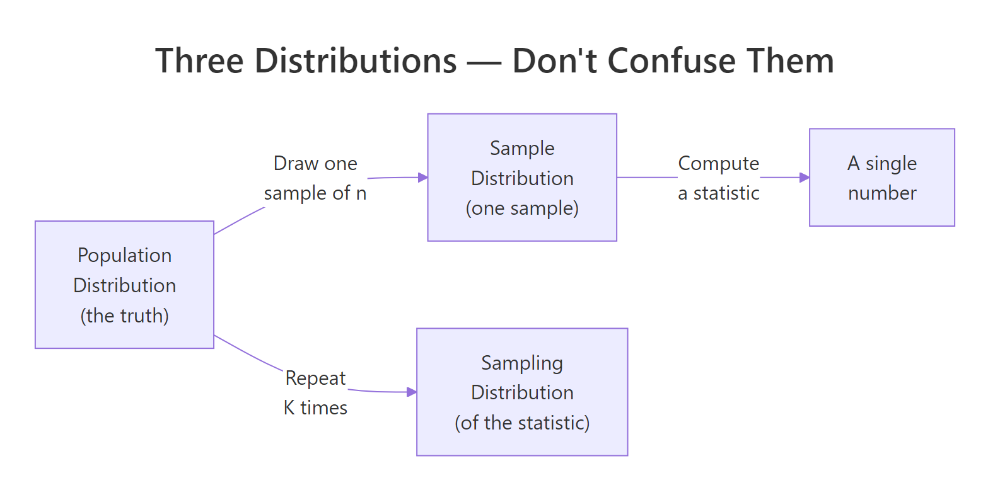
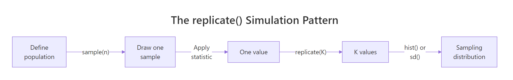
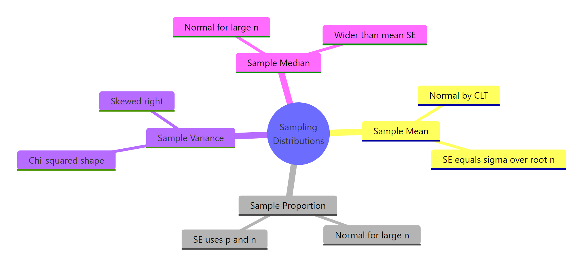

Sampling Distributions in R: What Actually Varies Across Repeated Samples
A sampling distribution is the distribution of a statistic — like the sample mean or sample proportion — across many repeated samples of the same size from the same population. It answers one question: if you ran your study again tomorrow, how different would the answer be? That single idea is the foundation of every confidence interval and every p-value you will ever compute.
What actually varies across repeated samples?
Most tutorials jump straight to code, but readers fail this topic for one reason: they confuse three different distributions that all involve the word sample. The population distribution is the unseen truth. A sample distribution is the histogram of one sample you collected. The sampling distribution is the histogram of a statistic — like the mean — computed across many hypothetical repeats of your study. Let's simulate 1,000 sample means from a known population and watch the third distribution appear.
What the output shows: the 1,000 sample means cluster tightly around the true population mean of 100, with a standard deviation of about 2.73. The red line sits right at the center of the histogram. No individual sample is perfectly 100, but when you look at many of them at once, a clean bell curve emerges. That bell is the sampling distribution — it is an object that exists in statistician-land, not in any single dataset you could collect.

Figure 1: The three distributions students confuse — population, one sample, and the sampling distribution of a statistic.
Try it: Rerun the simulation with n = 10 instead of n = 30. The histogram should be visibly wider. Save the result to ex_means_n10 and report its standard deviation.
Click to reveal solution
Explanation: Smaller samples average out less of the noise, so individual sample means drift farther from 100. The spread of the sampling distribution scales as sd / sqrt(n), so shrinking n from 30 to 10 multiplies the spread by sqrt(30/10) ≈ 1.73.
How do you simulate a sampling distribution in R?
Every sampling distribution you will ever build follows the same three-step recipe: draw a sample, compute a statistic, repeat the first two steps many times. R packages this recipe into a single built-in function — replicate() — which runs an expression K times and collects the results into a vector. Let's rewrite the previous simulation more explicitly by pulling the "draw and compute" step into its own function.

Figure 2: The replicate() pattern — draw a sample, compute a statistic, repeat K times, plot the results.
This style is slightly more verbose but becomes indispensable the moment your statistic is anything more complex than mean() — for example, a trimmed mean, a median, or a regression coefficient. The function carries the full recipe; replicate() carries the repetition.
What the output shows: the first six simulated sample means sit in a tight band around 100, none of them exactly 100. Averaging all 5,000 of them gives 99.996 — essentially the true population mean, confirming that the sample mean is an unbiased estimator. The standard deviation of those 5,000 means, 2.724, quantifies how much a single study's mean would typically stray from the truth.
Try it: Write a function ex_draw_one_max() that returns the maximum of 20 draws from the same population. Replicate it 2,000 times and report the median of the resulting distribution.
Click to reveal solution
Explanation: The maximum of 20 draws is not the population maximum — it is a random statistic whose sampling distribution is right-skewed. The median near 128 makes sense: with 20 Normal(100, 15) draws, the largest sits on average about 1.87 standard deviations above the mean, which is 100 + 1.87 × 15 ≈ 128.
What is the sampling distribution of the sample mean?
The sample mean is the most studied statistic in all of statistics, and its sampling distribution has a name everyone learns: the Central Limit Theorem guarantees that for large enough n, it is approximately Normal, centered on the true population mean, with a spread called the standard error of the mean.
$$\bar{X} \sim \text{Normal}\!\left(\mu,\ \frac{\sigma^2}{n}\right) \quad\Longrightarrow\quad \text{SE}(\bar{X}) = \frac{\sigma}{\sqrt{n}}$$
Where:
- $\bar{X}$ = the sample mean (the random variable)
- $\mu$ = the true population mean
- $\sigma$ = the true population standard deviation
- $n$ = the sample size
The formula says: the sampling distribution of the mean stays centered on the truth, but its spread shrinks with the square root of your sample size. Doubling n does not halve the spread — it divides it by √2. To see all three distributions side by side, let's plot the population, one sample, and the sampling distribution of the mean on one canvas.
What the output shows: panel 1 is the population — wide bell from about 55 to 145. Panel 2 is the random mess you actually get from one sample of 30 points; its shape barely hints at normality. Panel 3 is much narrower than either of the first two, centered tightly on 100. Panel 3 is the only one of the three that tells you how accurate your study is.
Now let's confirm the formula numerically. The theoretical standard error is σ/√n; the simulated one is just sd(sample_means).
What the output shows: the theoretical SE of 2.739 and the simulated SE of 2.731 agree to the second decimal place. That match is the whole point of simulation — you can always verify a textbook formula by generating the thing it claims to describe and measuring it directly. The tiny difference is Monte Carlo error, which shrinks as you increase the number of replications.
Try it: Simulate 4,000 sample means at n = 100 from the same Normal(100, 15) population, save to ex_means_n100, and verify its simulated SE matches σ/√100 = 1.5.
Click to reveal solution
Explanation: With n = 100, σ/√n = 15/10 = 1.5, and the simulation gives 1.504 — off by 0.004, which is Monte Carlo noise from only 4,000 replications. Push the replication count higher and the match tightens.
What is the sampling distribution of a sample proportion?
When your outcome is binary — voted yes or no, clicked or did not click, disease or no disease — the statistic you care about is the sample proportion, written $\hat{p}$. Its sampling distribution is also approximately Normal for large enough n, and its standard error has a closed form that depends only on the true proportion p and the sample size.
$$\hat{p} \sim \text{Normal}\!\left(p,\ \frac{p(1-p)}{n}\right) \quad\Longrightarrow\quad \text{SE}(\hat{p}) = \sqrt{\frac{p(1-p)}{n}}$$
Where:
- $\hat{p}$ = the sample proportion (the random variable — heads out of n flips)
- $p$ = the true population proportion
- $n$ = the sample size
Let's simulate 5,000 surveys, each flipping a biased coin with true probability p = 0.3 exactly 50 times, and build the sampling distribution of the observed proportion.
What the output shows: the 5,000 simulated sample proportions form a bell-shaped histogram centered exactly on 0.30 — the true population proportion. The navy vertical line splits the distribution cleanly in half. So even when your individual outcomes are just 0s and 1s, averaging them over n = 50 produces a statistic whose behavior across repeats is approximately Normal.
Now the theoretical versus simulated standard error:
What the output shows: theory predicts 0.0648 and simulation gives 0.0652 — a 0.6% difference, indistinguishable at the precision anyone ever reports a survey margin of error. That closeness is how pollsters convert a raw survey result into a headline like "46% support, ± 3%" without ever running the election twice.
Try it: Rerun the simulation with pop_p = 0.05 and prop_n = 30 — a case that violates the rule of thumb. Plot the histogram of ex_prop_sim and describe its shape.
Click to reveal solution
Explanation: With np = 30 × 0.05 = 1.5 (far below 10), the discreteness of the small binomial dominates. Many samples contain zero positives, so p-hat equals 0 thousands of times. The histogram has a hard left wall at 0 and a long right tail — nothing like a symmetric bell. Confidence intervals built from the Normal formula here will be wrong.
What is the sampling distribution of the sample variance?
So far both statistics we have met — the sample mean and the sample proportion — have approximately Normal sampling distributions. The sample variance is the first statistic in this tutorial whose sampling distribution is not Normal. When the population is Normal, the scaled sample variance follows a chi-squared distribution.
$$\frac{(n-1) s^2}{\sigma^2} \sim \chi^2_{n-1}$$
Where:
- $s^2$ = the sample variance (the random variable)
- $\sigma^2$ = the true population variance
- $n$ = the sample size
- $\chi^2_{n-1}$ = the chi-squared distribution with n − 1 degrees of freedom
The chi-squared shape is right-skewed — it has a hard left bound at zero and a long right tail. Let's simulate 5,000 sample variances from our Normal(100, 15) population with n = 20 and see the skew directly.
What the output shows: the histogram is clearly right-skewed, with a short tail on the low end and a long tail on the high end. The mean of the 5,000 simulated sample variances (224.87) nearly equals the true population variance (225), which confirms sample variance is an unbiased estimator — on average it gets the truth right, even though its distribution is not symmetric. A single sample could easily return a variance of 350 but very rarely a variance of 50.
Try it: Simulate 3,000 sample medians from the same Normal(100, 15) population with n = 20 and compare the histogram shape to the sample means distribution you already built. Save to ex_median_sim.
Click to reveal solution
Explanation: The sample median is still asymptotically Normal — its histogram is bell-shaped and centered at 100 — but its standard error is larger than the mean's at the same sample size. For Normal data the median's SE is about 1.253 × σ/√n, roughly 25% wider than the mean's. This is why the sample mean is called the more efficient estimator of a Normal center.
How does sample size change the sampling distribution?
Both SE formulas you have seen — σ/√n for the mean and √(p(1−p)/n) for the proportion — put sample size in a square-root denominator. The practical consequence: to cut the spread of your sampling distribution in half, you do not double n, you quadruple it. Let's see this visually by simulating 2,000 sample means at three different sample sizes and plotting them side by side.
What the output shows: all three histograms sit centered on 100, but the spread shrinks dramatically as n grows. At n = 10, sample means routinely land between 90 and 110; at n = 100, they almost all fall between 97 and 103. The standard deviations confirm the √n relationship — sd_n10 / sd_n100 is about 3.17, nearly the theoretical √(100/10) = √10 ≈ 3.16.
Try it: Use the simulated vectors above to verify the square-root law. Compute sd(means_n10) / sd(means_n100) and compare the result to sqrt(100 / 10).
Click to reveal solution
Explanation: Empirical and predicted ratios agree to two decimals. Every time you scale n by a factor k, the SE shrinks by sqrt(k). This is the single most important sample-size rule in practical statistics.
Practice Exercises
These capstone problems combine what you have built across the tutorial. Each one is solvable with the replicate() pattern and the SE formulas already shown.
Exercise 1: Sampling distribution of the sample maximum (Uniform population)
Simulate 5,000 sample maxima from a Uniform(0, 1) population with n = 25. Save the simulated statistics to my_max_dist, compute its mean and standard deviation, and describe the shape of the histogram. What does the shape tell you about the appropriateness of a Normal approximation here?
Click to reveal solution
Explanation: The histogram is strongly left-skewed and pressed against 1 on the right — nothing like a bell. The sample max of n Uniform(0, 1) draws has theoretical mean n/(n+1) = 25/26 ≈ 0.962, matching the simulation. A Normal approximation would be badly wrong here: no Normal distribution has a hard boundary at 1. This is why extreme-value statistics need their own theory (Weibull, Gumbel) rather than borrowing from the CLT.
Exercise 2: Build a 95% CI for a proportion two ways
A survey finds 42 "yes" responses out of 100. Two approaches to build a 95% confidence interval for the true yes-rate:
- Simulation-based: simulate 10,000 sample proportions from a Bernoulli population with
p = 0.42andn = 100; take the 2.5% and 97.5% quantiles as CI bounds. - Formula-based: use the Normal approximation
p-hat ± 1.96 × sqrt(p-hat × (1 - p-hat) / n).
Compute both intervals, store them in my_ci_sim and my_ci_formula, and compare them.
Click to reveal solution
Explanation: The two intervals are within about 0.01 of each other. The simulation CI is slightly wider because sample proportions are discrete (each survey can only land on 0/100, 1/100, 2/100, …). The formula CI treats p-hat as continuous, which is the Normal approximation's job. For n = 100 the agreement is excellent; for smaller n or extreme phat the simulation would be the more honest answer.
Complete Example
Let's tie everything together with an end-to-end analysis that a real pollster would run. A political campaign hires you to estimate support for a niche candidate whose true support rate, you later learn, is 4%. They can survey 500 voters. How precisely can they measure the true rate? Simulate the sampling distribution of the sample proportion, derive a margin of error, and check whether the Normal approximation is trustworthy at these parameters.
What the output shows: the sampling distribution is centered at 0.0399, essentially the true rate of 0.04. The simulated standard error is 0.0087, giving a 95% margin of error of 0.017, or ±1.7 percentage points. The rule-of-thumb check passes comfortably — np = 20 ≥ 10 and n(1-p) = 480 ≥ 10 — so the Normal approximation is safe here. The campaign's reportable answer is: "Our survey of 500 voters shows 4.0% support, with a margin of error of ±1.7 percentage points at 95% confidence." That margin came directly from the width of the sampling distribution you just built.
Summary
Every inference in classical statistics — confidence intervals, p-values, power calculations — rests on a sampling distribution. Here are the shapes you need to know and the one R pattern that builds any of them.

Figure 3: Common statistics and the shape of their sampling distributions at a glance.
| Statistic | Sampling distribution | Standard error | R recipe |
|---|---|---|---|
| Sample mean | Normal (CLT) | σ / √n | replicate(K, mean(rnorm(n, mu, sigma))) |
| Sample proportion | Normal (if np ≥ 10) | √(p(1-p)/n) | replicate(K, mean(rbinom(n, 1, p))) |
| Sample variance | Chi-squared shape (right-skewed) | σ² √(2 / (n-1)) | replicate(K, var(rnorm(n, mu, sigma))) |
| Sample median | Normal (asymptotic) | ≈ 1.253 σ / √n | replicate(K, median(rnorm(n, mu, sigma))) |
| Sample max | Bounded, skewed (extreme-value) | No closed form | replicate(K, max(runif(n))) |
Three takeaways worth pinning to your wall:
- The statistic is a random variable. Your reported number is one draw from a sampling distribution; the SE tells you how much that draw varies.
- Standard error shrinks with √n, not n. Halving your SE costs you four times as many observations.
- Normality is a common case, not a guarantee. Means and proportions tend to be Normal by the CLT; variances, maxima, correlations and most nonlinear statistics are not.
References
- Wasserman, L. — All of Statistics: A Concise Course in Statistical Inference. Springer (2004). Chapter 6. Link
- R documentation —
replicate()reference. Link - Diez, D., Çetinkaya-Rundel, M., Barr, C. D. — Introduction to Modern Statistics. OpenIntro. Link
- Moore, D. S., McCabe, G. P., Craig, B. A. — Introduction to the Practice of Statistics, 10th edition. W. H. Freeman.
- Wickham, H., Çetinkaya-Rundel, M., Grolemund, G. — R for Data Science, 2nd edition. Link
- Evans, M. J., Rosenthal, J. S. — Probability and Statistics: The Science of Uncertainty. Link
- CRAN Task View — Probability Distributions. Link
Continue Learning
- Central Limit Theorem in R — the deeper why behind the Normal shape of the mean's sampling distribution.
- Normal, t, F, and Chi-Squared Distributions in R — the exact families that show up as sampling distributions in this post.
- Binomial and Poisson Distributions in R — the parent distributions behind the sample proportion you simulated here.